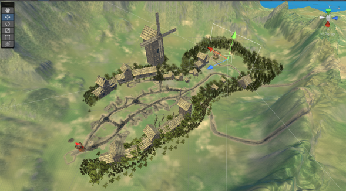

A simple retro style menu with a start button as well as credits, also included with a game end victory and defeat screen
A large village style map with medieval buildings and foliage, mobs run along this path and hurt the home tower
Towers from which enemy mobs spawn with a wave spawning system, as the game goes on the more mobs come out. Defeat all the mobs to win the game
Turret targetting system that automatically shoots at enemies, you can spawn them with the controller, but they are limited so be careful where you place the turrets!
Easy to read hand tips to learn how to play the game, features locomotion and continuous movement to help with motion sickness, as well as a way to spawn the turrets
Featuring a battle soundtrack that plays as you defend your tower from the goblins
Game was implemented using unity game engine with the XR interaction tool kit